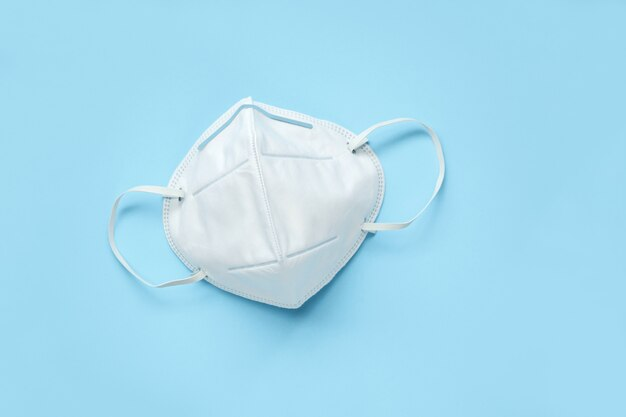

Choosing the right mask – Your ultimate guide
According to the World Health Organization (WHO), exposure to high levels of air pollution can cause a variety of negative health effects. Both short- and long-term exposure to air pollution has been linked with health impacts.
The list of illnesses and conditions that have been linked to air pollution is very long, including an increased risk of lung cancer, heart disease, and respiratory infections. However, there is substantial evidence that masks are highly effective in protecting humans against air pollution.
Benefits of Air Pollution Masks
N95 masks (also known as KN95 or FFP2 masks) do a solid job of protecting you from air pollution and filtering out the smallest particles. These masks, as the name suggests, offer up to 95% filtration of airborne particles. While this can make it more difficult to breathe through, N95s leave almost no gap to ensure the masks fit as tightly against the face as possible.
Other solutions, such as surgical masks, bandanas, and cloth masks have little effect.PM particles are small and they can easily pass through the fibers of the cloth or surgical mask.
Additionally, these masks don’t fit very well around your face. This means that every time you take a breath, particles will pass through the gaps on the bridge of your nose and the side of your cheeks and you’ll enhance them.
One study concluded that N95 masks, and to a lesser extent synthetic fiber and surgical masks, may lead to a decrease in smoke-attributable hospitalizations (as many as 22-39%).
What Features Should You Look For?
In this section, we will talk about what features you need to consider when buying a face mask

Filtration
Make sure you read the product specification to find out to what degree the mask can protect you from particulate matter.
Masks marked with an N are for USA standard, FFP is for European Standard, and KN is for Chinese standard. In the case of the N standard, the numbers next to the letter refer to the level of filtration the mask provides. A mask labeled N95/FFP2/KN95 is a solid choice, but for really polluted cities, we recommend you search for a mask that filters 99% of airborne particles labeled N99/FFP3/KN99. Because of the COVID pandemic, these masks are now widely available.
Ventilation
Ventilated face masks do not only provide significantly improved comfort, but they also enhance protection by restraining the inward leakage of ambient airborne particles
Fit
A good air pollution mask should not only cover the front of your face, but also the sides, and it should fit you perfectly. Even if you choose the mask with the best filtration, you won’t get the expected results if the mask doesn’t cover your mouth and nostrils fully.
Most quality masks come with a metal piece embedded in them that is located at the top of your nose. Make sure you press it down firmly so that the top of the mask takes the shape of your face and prevents unfiltered air to leak in.